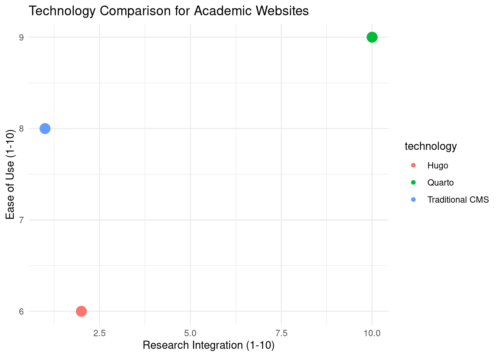

My experience migrating from Hugo/Toha theme to Quarto for a more integrated research workflow
Author
Gustavo Togeiro de Alckmin
Published
June 5, 2025
Why I Migrated My Website from Hugo to Quarto
After maintaining my academic website using Hugo with the Toha theme, I recently made the decision to migrate to Quarto. This post documents my journey, the reasons behind the switch, and lessons learned during the migration process.
My Previous Setup: Hugo + Toha
My original website was built using:
Hugo: Fast static site generator
Toha Theme: Beautiful academic portfolio theme
YAML data files: Structured content management
GitHub Pages: Free hosting and deployment
The Hugo setup served me well for several years, providing a professional-looking academic portfolio with sections for about, experience, projects, and blog posts.
Why Migrate to Quarto?
Several factors influenced my decision to migrate:
1. Research Integration
As a researcher working primarily with R, Quarto offers seamless integration:
Code
library(ggplot2)library(dplyr)# Example: Embedding live data analysis in website contentdata <-data.frame(technology =c("Hugo", "Quarto", "Traditional CMS"),research_integration =c(2, 10, 1),ease_of_use =c(6, 9, 8))ggplot(data, aes(x = research_integration, y = ease_of_use, color = technology, size =3)) +geom_point() +labs(title ="Technology Comparison for Academic Websites",x ="Research Integration (1-10)",y ="Ease of Use (1-10)" ) +theme_minimal() +guides(size ="none")

2. Unified Workflow
With Quarto, I can now:
Write blog posts with embedded R code and live results
Create presentations from the same content
Generate PDFs for academic papers
Maintain consistent styling across all outputs
3. Modern Development Experience
Quarto provides:
Better developer tools and VS Code integration
Live preview during development
More flexible theming options
Built-in Bootstrap integration
Migration Challenges
Content Conversion
The biggest challenge was converting Hugo’s YAML-based content structure to Quarto’s markdown files:
# Hugo structure (data/en/sections/about.yaml)section:name: Aboutdesignation:"Postdoc Researcher"company:name:"University of Missouri"summary:'Research summary...'socialLinks:-name: Githubicon:"fab fa-github"url:"https://github.com/username"
To Quarto’s integrated markdown:
---title: "About"---## BackgroundResearch summary integrated directly in markdown...[{{< fa brands github >}} GitHub](https://github.com/username)
Asset Migration
Moving images and static files required:
Reorganizing directory structure
Updating image references
Converting icon systems (Font Awesome integration)
Adapting responsive layouts
Styling Adaptation
Transitioning from Toha’s custom CSS to Bootstrap-based styling:
Maintained visual consistency
Adapted color schemes and typography
Ensured mobile responsiveness
Added custom SCSS for specific needs
Migration Process
Step 1: Project Setup
# Create new Quarto projectmkdir alckmin-quarto-sitecd alckmin-quarto-sitequarto create-project . --type website
Step 2: Content Migration
I created a systematic approach:
Extracted content from YAML files
Converted to Quarto markdown format
Reorganized directory structure
Updated internal links and references
Step 3: Design Implementation
Bootstrap theme selection and customization
SCSS variables for consistent branding
Component styling for cards, timelines, etc.
Responsive design optimization
Step 4: Deployment Setup
# GitHub Actions workflow for automatic deploymentname: Render and Publishon:push:branches:[main]jobs:build-deploy:runs-on: ubuntu-lateststeps:-uses: actions/checkout@v4-uses: quarto-dev/quarto-actions/setup@v2-uses: quarto-dev/quarto-actions/render@v2-uses: actions/upload-pages-artifact@v2with:path: docs-uses: actions/deploy-pages@v2
Results and Benefits
Improved Research Workflow
Now I can:
Include live R analysis in blog posts
Embed interactive visualizations
Maintain reproducible content
Version control everything in one place
Better Content Management
Single-source publishing: Same content for web, PDF, presentations
Live code execution: Results update automatically
Better collaboration: Markdown-based content is easier to edit
Version control: Git-friendly plain text format
Enhanced Functionality
The new site includes:
Interactive code blocks with copy functionality
Mathematical expressions with KaTeX
Responsive design that works on all devices
Fast loading with optimized assets
Lessons Learned
Planning is Essential
Content audit before migration saved time
Asset inventory helped track all files
URL mapping maintained SEO value
Backup strategy provided peace of mind
Gradual Migration Works Best
Instead of a big-bang approach:
Set up parallel development
Migrate content section by section
Test thoroughly at each stage
Maintain old site until confident
Community Resources Are Valuable
Quarto documentation is excellent
Community examples provided inspiration
GitHub discussions helped solve specific issues
Bootstrap themes offered design starting points
Future Enhancements
With the Quarto foundation in place, I’m planning:
Enhanced data visualizations with Observable JS
Interactive tutorials using Quarto’s computational features
Automated content updates from research databases
Multi-format publishing for presentations and papers
Recommendations
For other academics considering a similar migration:
When to Migrate
Consider Quarto if you:
Work primarily with R, Python, or Julia
Want integrated computational content
Value reproducible research workflows
Need multiple output formats
Migration Tips
Start small with a new section or blog
Use migration tools where available
Test thoroughly across devices and browsers
Document your process for future reference
Backup everything before starting
Conclusion
Migrating from Hugo to Quarto has significantly improved my research workflow and website management experience. While the migration required substantial effort, the benefits of having an integrated platform for research, analysis, and communication make it worthwhile.
The ability to embed live code, create reproducible content, and maintain everything in a unified workflow has already enhanced both my research productivity and my ability to share findings with the community.
For researchers seeking a modern, integrated approach to academic websites, Quarto represents a compelling choice that bridges the gap between research tools and web publishing.
Interested in learning more about my migration process or Quarto for academic websites? Feel free to reach out with questions!